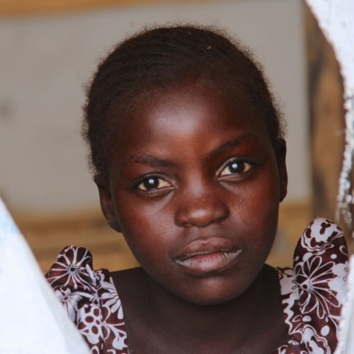
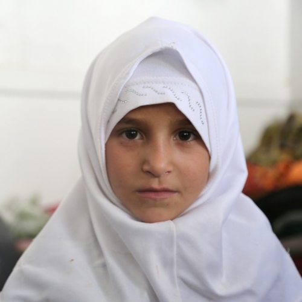
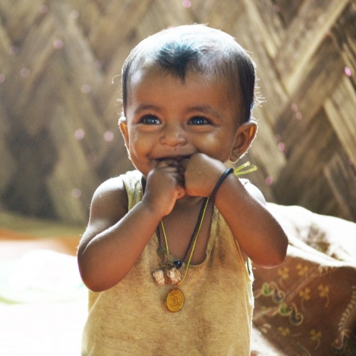
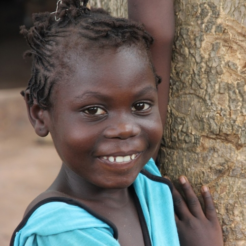

We are girls, trapped in crises, fighting for tomorrow
There are more than two billion of us. Yet, we are rarely heard. Our needs and aspirations seldom taken into account...
This story was originally published on 11 October 2015 on Medium.
Dear world decision-makers,
There are more than two billion of us. Yet, we are rarely heard. Our needs and aspirations seldom taken into account.
During wars and in the chaos following natural disasters, we are among the most vulnerable to being abused sexually, abducted, and exploited in all kinds of ways by armed and criminal groups. Look at your watch and do the math: every 10 minutes, an adolescent girl somewhere on this planet dies because of violence.
When forced out of our homes and pushed to live in overcrowded camps, there’s no often no privacy, no protection, no effort to address our specific needs, no assurance that we’ll be safe. Outside the camps, it’s just as dangerous: fetching water and wood, which is often our responsibility, is also one of the riskiest things for us to do. That’s when we get attacked, with no adult to watch over us.
In Iraq, we are often used as a recruitment tool by Islamic State. In Nigeria, Boko Haram uses us as suicide bombers, some of us as young as 7 years old. From Sudan to Nepal, from Colombia to the Central African Republic, from South Sudan to Myanmar, we face all kinds of horrors. Horrors no one should go through: trafficking, rape, slavery, prostitution, you name it.
 More than 250 million of us ̶ a third of us ̶ don’t even make it to 15 when our parents marry us away. It gets worse in humanitarian crises and emergencies: if our families don’t have enough to eat, we’re often sold to the highest bidder, no matter how young we are. For our parents, it’s a matter of survival.
More than 250 million of us ̶ a third of us ̶ don’t even make it to 15 when our parents marry us away. It gets worse in humanitarian crises and emergencies: if our families don’t have enough to eat, we’re often sold to the highest bidder, no matter how young we are. For our parents, it’s a matter of survival.
Many of us are then turned into mothers even though we are still children ourselves. The second most common cause of death for girls between the ages of 15–19 is complications from pregnancy and childbirth. We should all be in school, but today, at least 62 million of us are not. That’s one in five teenage girls.
Let’s face it: more often than not, it’s tough to be us.
But it is also a strength. A huge, unyielding strength.
When taught how to read, not only do we make the most of it for ourselves, we also pass it on to our little brothers and sisters, as well as our parents. When properly educated about sexual and reproductive health risks, we can make informed decisions and take control of our bodies and destinies, ensuring that vicious cycles of disease and death are slowly broken.
Proven facts: those of us that get to attend school, delay marriage and childbearing, are less vulnerable to disease including HIV and AIDS, and we learn things and skills that lead us to earn more money when we are grown-ups so we can support our families better. Send us to secondary school for one more year, and we’ll earn 25 per cent more later in our jobs.
In short, we are the biggest force of positive change you will ever meet. Not just for ourselves, not just for our families, but for our entire communities.
All we ask is that you do all you can to empower and keep us safe, in spaces where we can grow and reach our full potentials.
All we ask is that you consult us, involve us in your planning: we know what we need, we know what’s best for us.
All we ask is that you do your best to protect our right to education : we will pass it on and create the biggest ripple effect you can ever imagine.
Dear world decision-makers, give us a chance: you won’t regret it.
— Girls of this world

Ruth — Nigeria. When her village was attacked by Boko Haram, Ruth had to flee for her life. She now lives in Minawao camp in northern Cameroon. There, she receives an education and while classes can sometimes be as crowded as 200 pupils, she is glad to be back in school. Many children displaced inside Nigeria and refugees staying with host communities do not have access to education at all. Credit: OCHA/I. Brandau.
***

Hajir — Yemen. Originally from Sa’ada governorate, Hajir is one of the 1.4 million people displaced by the recent escalation of conflict in Yemen. She now lives the country’s capital, Sana’a, in a school with at least 200 other displaced. Since violence broke out in March, the number of children out of school in Yemen has reached 1.8 million. Credit: OCHA/C. Cans.
***

Rushan Bibi, 14 months — Myanmar. Rushan was very malnourished, but has now fully recovered after receiving treatment at an health centre run by Action Against Hunger in Rakhine state, Myanmar. Credit: OCHA/Z.Nurmukhambetova.
***

Anna Sowa, 19, and her 13-month-old son, Ibrahim — Sierra Leone. Anna, a single mother, contracted the Ebola virus when she was taking care of her sister, Mahawa, a 23-year-old nurse at Kenema hospital, in Sierra Leone. “It’s not easy every day, but I’m very happy to have survived. What would my baby do otherwise? But every day, I think of my sister. She didn’t make it.” Credit: OCHA/Y. Guerda.
***

Nicolette — Central African Republic. Violence and displacement are leaving lasting emotional and mental scars on thousands of Central African children. Nicolette is one of the country’s 370,000 internally displaced. Her newfound safety at Centre Jean 23 has put a smile on her face. But the one thing she wants above all? Peace. Credit: OCHA/G. Cortes.
***

{kind=link}